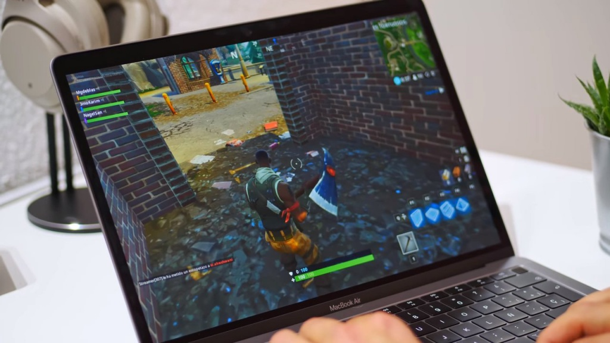

VideoJuegos
Fortnite Macbook

Fortnite Battle Royale es un videojuego gratuito perteneciente al género de Battle Royale desarrollado y
publicado por Epic Games. Fue lanzado como un título con acceso anticipado para Microsoft Windows,
macOS, PlayStation 4, Xbox One el 26 de septiembre de 2017, para iOS el 2 de abril de 2018, y para
Android el 9 de agosto. Fue lanzado en la consola Nintendo Switch el 12 de junio de 2018.1 Es un
spin-off de Fortnite: Salvar el Mundo, un cooperativo juego de supervivencia con elementos de
construcción.
League of Legends

League of Legends es un juego en línea competitivo de ritmo frenético, que fusiona la velocidad y la
intensidad de la estrategia en tiempo real (ETR) con elementos de juegos de rol. Dos equipos de
poderosos campeones, cada uno con un diseño y un estilo de juego únicos, compiten cara a cara a través
de diversos campos de batalla y modos de juego. Con un plantel de campeones en constante expansión,
actualizaciones frecuentes y un emocionante panorama competitivo, League of Legends ofrece posibilidades
de juego ilimitadas para usuarios de todos los niveles de habilidad.
Darksiders III

Darksiders III es un videojuego perteneciente al género de acción-aventura, desarrollado por los estudios
Gunfire Games y publicado por la empresa THQ nordic. Es una secuela de Darksiders II y la tercera
entrega numerada de la serie Darksiders. El lanzamiento del videojuego se produjo el 27 de noviembre del
año 2018, para el sistema Mac OS, Microsoft Windows, y las plataformas PlayStation 4 y Xbox One.